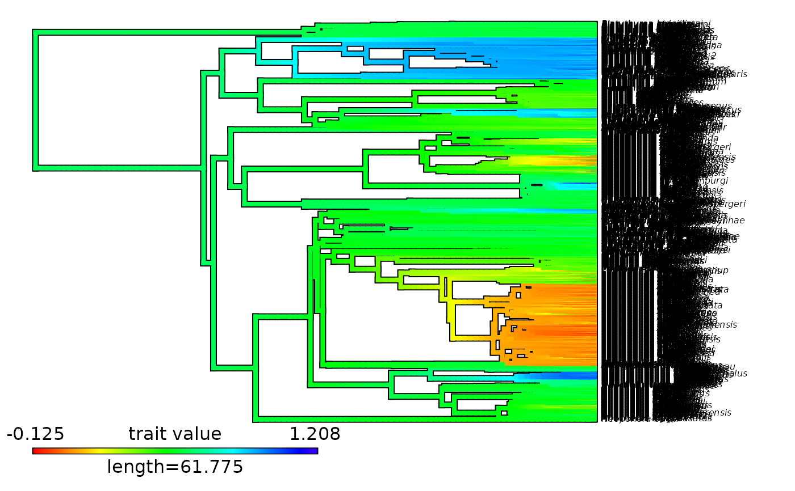

Plot on a time-calibrated phylogeny the evolution of a continuous trait as
summarized in a contMap object typically generated with prepare_trait_data().
This function is a wrapper of original functions from the R package phytools:
Step 1: Use
phytools::setMap()to update the color scale if requested.Step 2: Use
phytools::plot.contMap()to plot the mapped phylogeny.
Arguments
- contMap
List of class
"contMap", typically generated withprepare_trait_data(), that contains a phylogenetic tree and associated posterior probability of being in a given state/range along branches. Each object (i.e.,densityMap) corresponds to a state/range. If no color is provided for multi-area ranges, they will be interpolated.- color_scale
Vector of character string. List of colors to use to build the color scale with
grDevices::colorRampPalette()showing the evolution of a continuous trait. From lowest values to highest values.- ...
Additional arguments to pass down to
phytools::plot.contMap()to control plotting.- display_plot
Logical. Whether to display the plot generated in the R console. Default is
TRUE.- PDF_file_path
Character string. If provided, the plot will be saved in a PDF file following the path provided here. The path must end with ".pdf".
Value
If display_plot = TRUE, the function plots the time-calibrated phylogeny displaying the evolution of a continuous trait.
If PDF_file_path is provided, the function exports the plot into a PDF file.
An object of class "contMap" with an (optionally) updated color scale ($cols) is returned invisibly.
Details
This function is a wrapper of original functions phytools::setMap() and phytools::plot.contMap(). Additions are listed below:
The color scale can be controlled directly with the argument
color_scale.The plot can be exported in PDF using
PDF_file_pathto define the output file.
Author
Maël Doré
Original functions by Liam Revell in R package phytools. Contact: liam.revell@umb.edu
Examples
# Load phylogeny
data(Ponerinae_trait_tip_data, package = "deepSTRAPP")
# Load trait df
data(Ponerinae_tree, package = "deepSTRAPP")
## Prepare trait data
# Extract continuous trait data as a named vector
Ponerinae_cont_tip_data <- setNames(object = Ponerinae_trait_tip_data$fake_cont_tip_data,
nm = Ponerinae_trait_tip_data$Taxa)
# Get Ancestral Character Estimates based on a Brownian Motion model
# To obtain values at internal nodes
Ponerinae_ACE <- phytools::fastAnc(tree = Ponerinae_tree, x = Ponerinae_cont_tip_data)
# Infer Ancestral Character Estimates based on a Brownian Motion model
# and run a Stochastic Mapping to interpolate values along branches and obtain a "contMap" object
Ponerinae_contMap <- phytools::contMap(Ponerinae_tree, x = Ponerinae_cont_tip_data,
res = 100, # Number of time steps
plot = FALSE)
# Plot contMap with the phytools method
plot(x = Ponerinae_contMap)

# Plot contMap with an updated color scale
plot_contMap(contMap = Ponerinae_contMap,
color_scale = c("darkgreen", "limegreen", "orange", "red"))
# PDF_file_path = "Ponerinae_contMap.pdf")